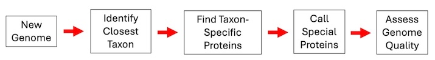
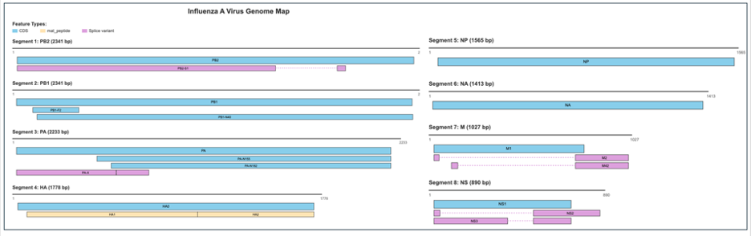

LowVan Viral Annotation Module¶
Overview¶
In the summer of 2025, the BV-BVRC team released a new module into the genome annotation system called LowVan (short for Low-Tech Viral Annotation). LowVan was developed within our group for the purpose of having a system that can cover a large number of viruses with consistent annotations with very low input and overhead maintenance cost. The project was also conceived as a means of cleaning up inconsistencies in viral annotation with an eye toward training future AI-based systems.
See also¶
Taxa currently covered by LowVan include:
Bunyaviricetes
Arenaviridae
Fimoviridae
Hantaviridae
Nairoviridae
Peribunyaviridae
Phasmaviridae
Phenuiviridae
Tospoviridae
Filoviridae
Orthoebolavirus
Orthomarburgvirus
Orthomyxoviridae
Alphainfluenzavirus
Influenza A virus
Betainfluenzavirus
Influenza B virus
Deltainfluenzavirus
Influenza D virus
Gammainfluenzavirus*
Influenza C virus
Isavirus
*Paramyxoviridae
Aquaparamyxovirus
Ferlavirus
Henipavirus
Jeilongvirus
Metaavulavirus
Morbillivirus
Narmovirus
Orthoavulavirus
Orthorubulavirus
Paraavulavirus
Pararubulavirus
Respirovirus
Pneumoviridae
Metapneumovirus
Orthopneumovirus
Orthopneumovirus muris
Some important details on the design of LowVan¶
LowVan is a tool for identifying features—mostly protein encoding genes and mature peptides—in viral genomes. It is based on well supported ORF calls and mature peptides that were pre-existing in BV-BRC and GenBank, as well as ORFs that were missed by these resources, but are supported by the literature. LowVan does not currently call RNA features such as stem loops, promotors, slippage sites, editing sites, etc. It also does not currently call protein motifs and cleavage sites. While we recognize the importance of these features, the current focus of the project is getting protein annotation support for a large swath of the viruses.
How LowVan Works¶
In order to keep LoVan simple, it is designed as a series of modules (Figure 1). In its present state, it has only one primary external dependency, which is BLAST.
The first step of the LowVan workflow is to determine if a genome can be annotated. This is currently done by performing a BLASTn search using the incoming genome as the query and a set of maintained reference genomes corresponding to the curated taxa listed above as the subjects. If the incoming genome matches with a high enough bit score, the genome proceeds to the next step, otherwise the analysis ends.

Figure 1. The LowVan workflow
In the second step, we maintain a set of clean and well-curated position specific scoring matricies (PSSMS) for every protein and mature peptide for a curated taxon. These PSSMs were generated from curated alignments for each protein. It is often necessary to build PSSMS from subalignments in order to accurately capture the diversity, particularly with respect to variation in the N- and C-terminal regions. For each protein, all of the PSSMs are queried against the genome in a tBLASTn search, and the match with the best bit score is used to call the protein. By default, the program will search upstream to find a Met start if one was not found, and downstream to find a stop codon. This functionality is turned off when there is a non-Met start or when searching for mature peptides that start or end at a cleavage site.
The third step is calling special proteins. There are currently two types of special proteins covered by LowVan: those that result from transcript editing, and splicing. The transcript editing module specifically looks for any protein encoding gene where the transcript has been modified such that it does not match the original genome. This module covers both transcript editing and ribosomal slippage. Transcript editing occurs in the Paramyxoviridae and Filoviridae. In this case, the RNA-dependent RNA polymerase encounters a region of low complexity and pauses, ultimately resulting in the incorporation of one or more additional nucleotides into the transcript and a subsequent a frame shift. Ribosomal slippage occurs in the Orthomyxoviridae and happens when the ribosome encounters a specific region of low complexity in the transcript followed by a stem loop, causing the ribosome to effectively move back one nucleotide, resulting in a frame shift. To call these features, a set of curated post-edited nucleotide sequences is maintained. A BLASTn search is used to identify the potential ORF in the incoming genome. If the match criteria are met, then the amino acid sequence of the modified transcript is added to the genome record. A single set of coordinates are issued for the ORF from the original start position to its new stop codon.
The second module identifies splice variants. In the set of supported taxa, splicing occurs mostly in the Orthomyxoviridae. A set of curated nucleotide sequences of genes or genomic regions involved in the splicing are maintained along with the coordinates of the splice donor, splice acceptor, and specific splice sites. BLASTn is used to identify potentially spliced ORFs. When a match is encountered that contains an exact match to a curated splice donor and acceptor site, the spliced ORF is created, translated, and added to the genome record. Spliced variants get two sets of coordinates corresponding to the 5’ and 3’ exons.
The final step of the LowVan workflow is to assess genome quality. Each genome is analyzed to determine if it has the correct number of segments, acceptable segment lengths, an acceptable number of ambiguous bases (the default is < 1%), the correct set of proteins, the correct copy number of each protein, and an acceptable length for each protein. When the presence of a protein is variable throughout a taxon, its presence and copy number are used for segment identification, but it is not used in the overall assessment of quality.
Remarks on LowVan annotations¶
The annotation string for each protein is intended (when possible) to emulate SEED rules, which describe the protein’s function.
When appropriate, annotation strings are intended to cover a broad phylogenetic distance, so they are often general.
Annotation strings do not contain gene names unless the evidence for the function is unknown, unknown to be the same across the curated taxon, or difficult to understand in its absence.
This should be viewed as a work in progress.
The viral community relies on the shorthand of gene/protein names. These are carried forward in the “Gene Symbol” field in the database, not the annotation string. For example, the annotation string for the polymerase protein would be “RNA-dependent RNA polymerase” and its gene symbol would be “L.”
When there are multiple numbered segments, and numbering is inconsistent (as with FluA-D), the segments are named after their primary protein.
There is considerable inconsistency in mature peptide naming, with the mature peptides being named in N-terminal to C-terminal order, or in order of their discovery, or in order of size. Glycoproteins are particularly rife with this problem. All GPC mature peptides are named as either N- or C-terminal, rather than GP1 and GP2.
LowVan attempts to cover the proteins that are supported by the literature. This includes minor proteins when possible (Figure 2).
“Partial” features are called, but their status is described in the feature quality file that is output by the program and in the genome type object, not in the annotation string.
All segments with conserved proteins are required for a “Good” quality designation. LowVan will still annotate single segments greater than 300 nucleotides in length, but it will dutifully list these as being poor quality.

Figure 2 Flu A proteins covered by LowVan. Gene symbols are shown. Segment lengths are approximate.
When should I use LowVan?
LowVan will provide accurate and consistent annotations for the taxa described at the beginning of this document, so any annotation job that involves those taxa would be an appropriate use case.
LowVan will attempt to run when a specific NCBI taxonomy ID is unknown. It simply won’t work if your contigs don’t match the references, so in essence, there is no harm in trying. We advise selecting a taxonomy ID that is as close as possible to your submitted genomes.
LowVan attempts to annotate all of the minor proteins for a taxon. If you are interested in those, it may be advantageous to use this tool.
When you want genome, segment, and feature-level quality estimates for the supported taxa described above.
What is the relationship between VIGOR4 and LowVan?¶
There are a handful of taxa that are covered by both LowVan and VIGOR4. LowVan is a newer effort aimed at increasing the coverage of supported viral taxa and improving annotation consistency within the BV-BRC. The LowVan and VIGOR4 systems are based on slightly different tech and are designed with different objectives in mind. That being said, VIGOR4 is still fully supported within BV-BRC and is not going away. If you like VIGOR4, then you should continue to use it. If you are unsure which tool would be best for your needs, try using both. The style of the annotation strings will be the most noticeable difference. VIGOR4’s annotation strings have been tuned to the needs of specific communities of viral researchers over the last ten years, whereas LowVan’s are designed for automated projection.
How to cite LowVan¶
LowVan is currently unpublished, but we are getting close to completing the manuscript. For now, please cite our most current NAR database issue for BV-BRC:
Olson, R.D., Assaf, R., Brettin, T., Conrad, N., Cucinell, C., Davis, J.J., Dempsey, D.M., Dickerman, A., Dietrich, E.M., Kenyon, R.W., et al. (2023) Introducing the bacterial and viral bioinformatics resource center (BV-BRC): a resource combining PATRIC, IRD and ViPR. Nucleic acids research, 51, D678-D689
Availability¶
The main development repo for LowVan, which contains the bleeding edge changes is here: https://github.com/jimdavis1/Viral_Annotation. The readme on the repo contains more program-specific details. It also contains the PSSMs and alignments from which they were generated.